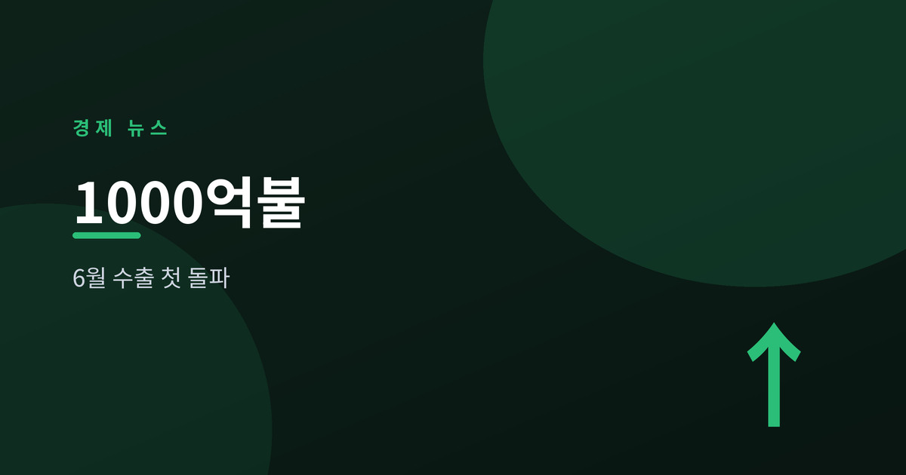
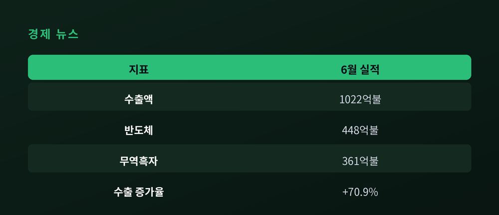
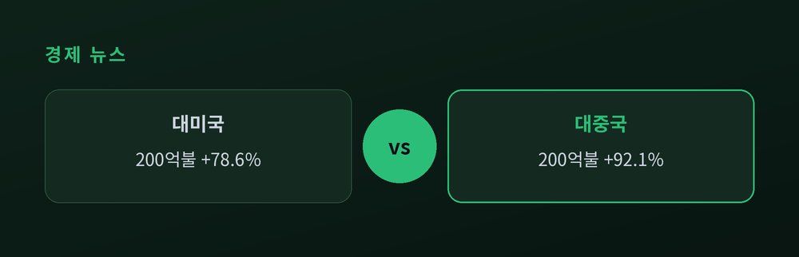
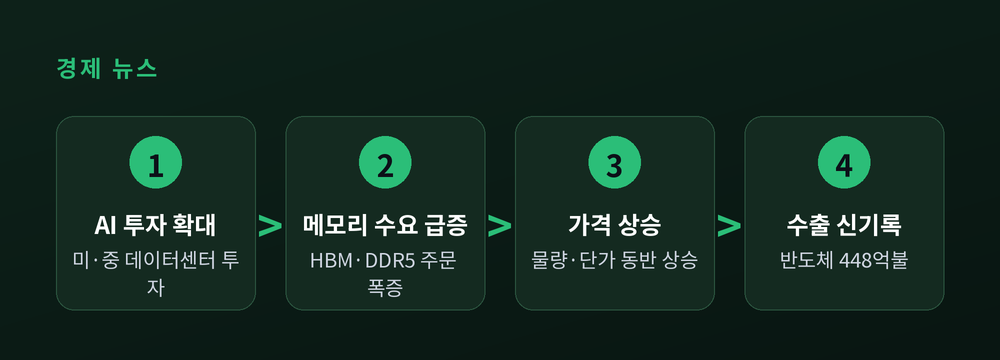
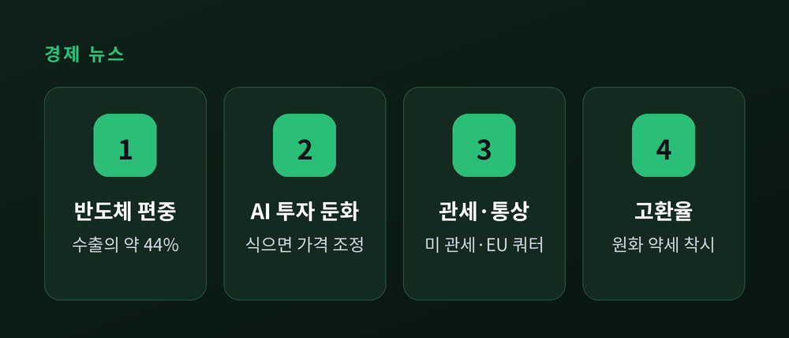

무역흑자 361억 달러의 명암

2026년 6월, 한국의 월간 수출이 사상 처음으로 1,000억 달러를 넘었다. 반도체가 끌고, 무역수지는 역대 최대 흑자를 냈다. 무슨 일이 있었고, 왜 중요하며, 앞으로 무엇을 지켜봐야 하는지 차분히 짚어본다.
산업통상부 발표에 따르면 6월 수출액은 1,022억 5,000만 달러다. 흔히 '1,023억 달러'로도 표기된다. 전년 같은 달보다 70.9% 늘었다.
월간 수출이 1,000억 달러를 넘은 것은 이번이 처음이다. 종전 최고 기록은 바로 한 달 전인 5월의 877억 5,000만 달러였다. 한 달 만에 기록을 다시 썼다.
증가율 70.9%라는 숫자도 가볍지 않다. 1978년 10월 이후 가장 큰 폭이라는 설명이 붙었다. 반세기 가까운 기간에서 손꼽히는 상승이다.
이로써 한국은 월 수출 1,000억 달러를 넘긴 네 번째 나라가 됐다. 앞선 나라는 독일, 중국, 미국이다. 세계 무역에서 상위권 국가들만 밟았던 문턱을 넘어선 셈이다.
무역수지도 함께 기록을 세웠다. 6월 흑자는 361억 5,000만 달러다. 월간 흑자가 300억 달러를 넘은 것 역시 처음이며, 이로써 17개월 연속 흑자가 이어졌다. 수입은 661억 달러로 30.1% 늘었다. 수출이 더 빠르게 커지면서 흑자 폭이 벌어졌다.

이번 성적표의 주인공은 분명하다. 반도체다.
6월 반도체 수출은 448억 2,000만 달러로, 1년 전보다 199.5% 늘었다. 약 두 배가 아니라, 두 배 가까이 '증가'했다는 뜻이다. 월간 반도체 수출이 400억 달러를 넘은 것도 처음이다.
상반기 누적으로 봐도 흐름은 뚜렷하다. 반기 반도체 수출은 1,924억 달러에 이른다. 지난해 1년치 실적(1,734억 달러)을 반년 만에 넘어섰다. 속도가 예사롭지 않다.
지역별로도 반도체의 힘이 드러난다. 대중국 수출은 92.1% 늘어 200억 3,000만 달러, 대미국 수출은 78.6% 늘어 200억 2,000만 달러였다. 두 시장이 나란히 200억 달러 선을 넘었다. 특히 대중국 반도체는 232% 급증했다.

왜 반도체가 이렇게 뛰었을까. 배경에는 인공지능(AI)이 있다.
미국과 중국의 빅테크 기업들이 AI 서버와 데이터센터에 대규모로 투자하고 있다. 이 서버에는 고성능 메모리가 대량으로 들어간다. 특히 HBM(고대역폭메모리)과 서버용 DDR5가 핵심이다. 수요가 몰리자 가격도 올랐다. 메모리 고정가격은 1년 사이 DDR5 16Gb가 682%, 낸드 128Gb가 807% 상승했다는 집계가 나온다. 물량과 단가가 함께 뛴 것이다.
여기에는 한국 기업의 위상이 자리한다. 삼성전자와 SK하이닉스가 세계 HBM 시장의 80% 이상을 쥐고 있다는 분석이 많다. AI 붐의 길목에 한국 반도체가 서 있는 구조다.

기록은 반갑다. 다만 숫자만으로 마냥 호황이라 단정하기는 이르다는 지적도 함께 나온다.
첫째는 편중이다. 전체 수출에서 반도체가 차지하는 비중이 약 44%까지 올랐다는 추산이 있다. 한 품목이 전체를 끌어올리는 만큼, 그 품목의 업황이 꺾이면 전체가 흔들릴 수 있다. 힘의 원천이 곧 취약점이 되는 구조다.
둘째는 AI 투자의 지속성이다. 지금의 호조는 AI 투자가 이어진다는 전제 위에 있다. 신규 증설이 가동되기 전에 투자 열기가 식으면, 가격과 물량이 동시에 조정될 가능성도 거론된다.
셋째는 통상 환경이다. 미국의 관세 조치, 유럽연합(EU)의 무관세 철강 쿼터 축소 같은 변수가 남아 있다. 보호무역 기류가 짙어지면 반도체 밖 품목이 먼저 영향을 받을 수 있다.
넷째는 환율이다. 수출액 자체는 달러로 집계된다. 원화가 약할수록 같은 물량도 실적이 크게 보인다. 이번 기록에 고환율이 얹혀 있다는 해석이 나오는 이유다.
물론 어두운 이야기만 있는 것은 아니다. 반도체를 뺀 비(非)반도체 부문의 일평균 수출도 역대 최대를 기록했다는 집계가 있다. 회복의 온기가 반도체 한 곳에만 머물지 않았다는 신호로 읽을 수 있다.
상반기 누적 수출은 4,967억 달러(48.4% 증가)다. 상반기 무역흑자는 1,383억 달러로, 역대 '연간' 최대 흑자였던 2017년 952억 달러를 반년 만에 넘어섰다. 이 흐름이 이어진다면 연간 수출 1조 달러도 산술적으로 불가능하지 않다는 이야기가 나온다.
다만 전망은 조건부로 읽는 편이 안전하다. AI 메모리 수요가 하반기에도 유지될지, 관세와 환율이라는 외부 변수가 어떻게 움직일지에 따라 결과는 달라질 수 있다. 기록은 이미 세워졌지만, 그 기록이 얼마나 튼튼한 토대 위에 서 있는지는 아직 시험대에 올라 있다.

정리하면 이렇다. 6월 수출은 분명한 기록이자, 분명한 질문이기도 하다.
"기록을 만든 힘과, 그 힘에 기대는 위험은 같은 자리에서 나온다."
반도체가 이끈 신기록이 일회성 정점일지, 새로운 표준의 출발점일지. 그 답은 하반기 숫자가 말해줄 것이다.
이 글은 정보 제공을 위한 것이며 투자 권유가 아닙니다.
참고 출처: 산업통상부, 대한민국 정책브리핑, Korea JoongAng Daily, UPI, Bloomberg, The Korea Times, 파이낸셜뉴스, 아주경제, 뉴스핌, 더퍼블릭, TradingKey, Seoul Economic Daily